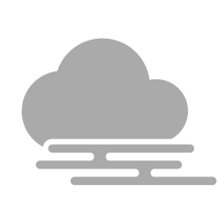

rakugaki_pao
描く塗る喜びすぐそこにはじめに
rakugaki_pao は、線画と色塗りに特化したシンプルなペイントアプリですわ。アンドゥは1回、レイヤーは線画と色塗りの2つだけ、変形やフィルタはありませんの。
ただペンを動かして描き進めるだけの、直感的な操作を特徴としています。
美麗な作品を作るよりも、線を描き色を塗る手描きの楽しさを味わうことを目的としたアプリですの。
つかいかた
rakugaki_paoには、黒ペン・黒ペン消しゴム・色ブラシ・色ブラシ消しゴムの、4種類の描画ツールがありますわ。 左側の横スライダーで太さを、右側の縦スライダーで透明度を、それぞれ独立して調整できますの。
消しゴムが２種類あって、対応するツールで描いた線のみ消すことができるのが
rakugaki_paoの特徴ですの。
絵の共有
できあがった絵は、右上のボタンから簡単に共有できましてよ！クリップボードにコピー
 ・ダウンロードして保存
・ダウンロードして保存 ・アプリで共有 の
・アプリで共有 の3種類がありますの。
対応するマストドンサーバーにアカウントをお持ちの方は、キャンバス下のロゴマーク  をクリック、サーバーを選択し一度認証すると、次回からはロゴマーククリックで投稿ダイアログが開きますわ。 現在、mistodon.cloud, fedibird.com に対応しています。
投稿・共有時には、クリアボタンを最後に押してからの経過時間がお絵かきした時間として表示されますわ。
キャンバス下の #rakugaki_pao ハッシュタグをクリックすると、ハッシュタグをクリップボードにコピーできますの。 コピーや保存から投稿するときに活用してくださいませ。
困ったときは
Windows 10/11でペンタブレットが正常に反応しない場合は、ペンタブの設定で "Windows Ink" を無効にしてみてくださいまし。その他、何かおかしいときはリロード（再読み込み）してみてくださいませ。
リロードしても絵は消えませんわ。
ショートカットキー
Z: 戻る R: ツールのリセット（再読み込み）A: ツールサイズ縮小 D: ツールサイズ拡大
W: 不透明度アップ S: 不透明度ダウン
Q: 黒ペン/色ブラシに切り替え E: 消しゴムに切り替え
X: 黒ペン/色ブラシ←→消しゴムのトグル
C: 黒ペン/黒ペン消し←→色ブラシ/色ブラシ消しのトグル
注意事項
本アプリ rakugaki_pao を使用したこと（もしくは使用できなかったこと）によるトラブルについて、作者は一切の責任を負いません。インターネットへの画像の公開は、ご自身の責任で行ってくださいませ。
画像を外部サービスに投稿する際は、投稿先の規約に従ってください。
作者

こすふぃー @cosphi@mistodon.cloud
連絡先: mastodon(fedibird) / Misskey / 𝕏
素敵な象さんのファビコンは、ろみぜさまに描いていただきましたの。
mistodon.cloudへの投稿機能は、karino2さまに作っていただきましたわ。iPadにも対応させてくださいましたの
その他、製作に当たって mistodon.cloud のみなさまにご協力いただきましたの。
いつもありがとうございます！